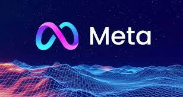
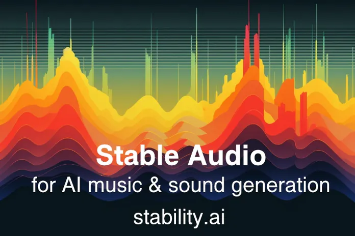

IAs geradoras de textos:
Chat GPT-4 (OpenAI): Um modelo de linguagem avançado que pode gerar texto coerente e relevante.clque aqui para acessar

IA Pi (Inflection): Focado em geração de conteúdo criativo. clque aqui para acessar

Formula Bot Kick Resume Bard (Google): Especializado em criar currículos.clque aqui para acessar

IAs geradoras de imagens e vídeos:
Gen-2 (Runway): Cria imagens e vídeos.clique aqui paara acessar
Dall-E 3 (OpenAI): Gera imagens a partir de descrições.clique aqui acessar
Bing Image Creator (Microsoft): Cria imagens com base em palavras-chave.clique aqui para acessar
Dreamlike.art Estúdio Mágico (Canva): Ferramenta de design.clique aqui para acessar
IAs geradoras de sons:
SeamlessM4T (Meta): Cria trilhas sonoras.clique aqqui para acessar

So-VITS-SVC Stable Audio (Stability AI): Gera áudio estável.clique aqui para acessar

Essas são apenas algumas das muitas IAs notáveis em atuação atualmente. Elas estão moldando nosso mundo de maneira impressionante 🌟.